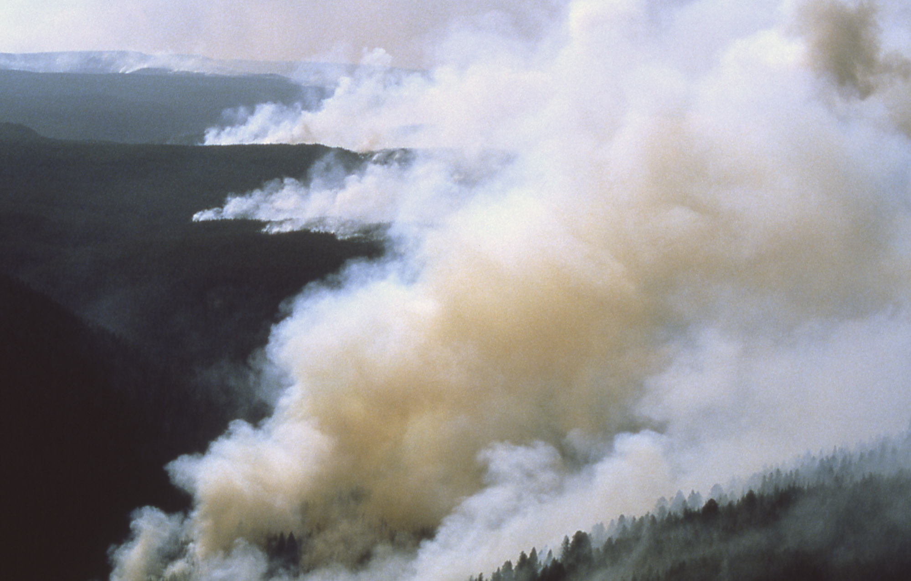
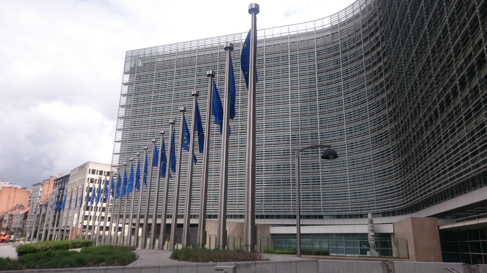

现代性像削足适履的铁床，把丰富的现实强行塞进整齐、可控、可测量的模型里。我们出于好意扮演"指挥家"，不让社会与经济体系遭受压力源和随机性的干扰，反而使它们脆弱，最后像瀑布层层而下，造成更大的波动。——本卷卷旨
第 5 章露天市场与办公大楼（The Souk and the Office Building）

主要思想
- 两类随机性：温和波动的"平均斯坦"（书中译作"平常世界"，Mediocristan）vs 剧烈跳跃的"极端斯坦"（"极端世界"，Extremistan）。前者小幅浮沉、相互抵销；后者长期平静、偶尔一跳致命。用人的力量平滑随机性，就是把前者强行改造成后者。
- 一对兄弟，两种风险人生：乔治开出租车，收入天天波动、年年稳定，风险看得见，小错误是信息，还能接到意外的"免费选择权"；约翰受雇于大银行人事部门，月薪准时到账，却在五十岁接到一通人事电话时收入瞬间归零——平稳的表象下，藏着被集中、被延迟的风险。
- 政治版本：瑞士靠市政与州层面的自下而上"噪声"保持整体稳定，这个最稳定的国家反而没有强大的中央政府；埃及式整合型集权国家、复兴党叙利亚的"现代化"（扫除露天市场的"脏乱"、代之以崭新办公大楼）压制小波动，换来的是延迟并被放大的大动荡——本章标题正取自这场替换。
- 城市国家与 bottom-up 系统的美德：小国林立如餐厅业，波动虽多却不会爆发全行业危机；随机性被分散到众多小单位，而不是集中在一个大单位里。
原文引用
人生的核心错觉
"这就是人生的核心错觉：认为随机的风险高，所以是坏事；消除随机，就能消除风险。"
看得见的风险与隐藏的风险
"计程车司机、妓女（非常古老的行业）、木匠、水电工、裁缝师和牙医等技术劳工，所得波动都很大……他们的风险是看得见的。但是受雇于人的上班族却不是这样，他们的所得虽然不会大起大落，却可能在接到人事部门的一通电话之后，所得立刻掉为零而大受震撼。受雇者的风险是隐藏的。"
平滑随机性的代价
"用人的力量去平滑随机性，会产生相当于约翰的所得：平稳却脆弱。……自然的随机性比较像乔治的所得：非常大的震撼扮演较小的角色。"
瑞士没有政府
"这个世界上最稳定的国家，竟然没有一个政府。而且，虽然它没有政府，却没有因此而不稳定；相反的，正因为没有政府，它才稳定。"
平常世界与极端世界
"平常世界有许多变异，不会发生单一极端的变异；极端世界很少出现变异，但一有变异，便非常极端。"
阿勒颇商人的选择
"我们阿勒颇人宁可打仗，也不坐牢。"——"坐牢"指的是失去政治和经济自由。
生活中的案例
案例一：网约车司机 vs 大厂"优化"名单
自由职业者、网约车司机每天为收入起伏抱怨"不稳定"，但坏日子逼他换时段、换区域、换策略，小错误当天就得到修正；大厂员工月薪准时到账、福利齐全，安全感极强——直到一纸"组织优化"通知，收入与职业身份同时归零，年龄还让再就业格外困难。
解读：前者活在平均斯坦，波动即信息，持续的小压力使他不断适应，甚至留下接住意外的余地；后者活在极端斯坦，风险没有被消除，只是被隐藏并攒成一次大跳。看不见的平稳，正是火鸡被喂养的第一千天。
案例二：小区业委会的"争吵" vs 一刀切的"安静"
老小区的业委会为停车位、维修基金吵个不停，看似低效琐碎；另一些小区一切等物业和上级的统一规定，表面和谐。
解读：日常摩擦就是自下而上的小波动，把矛盾拆碎在日常里解决，恰是瑞士式"稳定到无聊"的治理逻辑——市政层面的争吵不可规模化，因而酿不成大灾难；而把矛盾压进冰层之下的"干净"，一爆发就是总冲突。斯大林不可能存在于自治市之中。
案例三：被"大平稳"喂养的金融危机
2008 年之前，银行体系以驯服的价格波动、刚性薪酬和"大而不能倒"的隐性担保压制小风险，经济学家宣称"大平稳"时代来临；结果小风险在系统内持续累积、相互传染，最终以雷曼时刻一次性结算。
解读：压制波动不等于消除风险，而是把平均斯坦改造成极端斯坦——像把无数小雨拦进同一座水库，换一场决堤。避开小错误，只会使大错误更为严重。
本质：自下而上的小波动是系统的减震器，它把风险拆散在日常里消化，也让系统在适应中变强；自上而下强加的"稳定"是假稳定——它不消除风险，只是把风险隐藏、延迟，攒成一次大爆发。
第 6 章告诉他们我爱（某些）随机性（Tell Them I Love (Some) Randomness）
主要思想
- 有些系统天生喜欢随机性，波动是它们的燃料。冶金学中的"退火"（annealing）先加热材料、再控制冷却：热让原子从原位松脱、随机漫步，冷却时反而有机会锁定更好的新结构，金属因此更坚硬。森林亦然——每隔一段时间的小规模野火，会清掉系统中最易燃烧的物质，防止可燃物累积成毁灭性大火。
- 过度稳定化一个有机体或复杂系统，反而是在伤害它。身体、经济、政治皆然：人为压平小波动，风险并不会消失，而是在表层底下悄悄累积，最终以更猛烈的方式一次性爆发——这就是"伪稳定"：看起来风平浪静，实则是定时炸弹。
- 压抑波动的代价是黑天鹅。波动本身是一种信息，系统借小挫折不断"洗盘"、排出脆弱；人为消除它，系统反而变得极易受害于黑天鹅事件，且爆发拖得越久，伤害越严重。
- 现代性的定义。塔勒布把"现代化"定义为：人类大规模支配环境，用系统性的方法磨平世界的锯齿、窒息波动性与压力因子的时代——现代生活的核心，正是对反脆弱性的否定。
- 一句话总结：少了波动，就没有稳定。
原文引用
小火是系统的泻药
每过一段时间发生的森林小火灾，可以清除系统中最容易燃烧的物质，不让它们有机会累积太多。采用系统性的方法，防止森林火灾发生，"以策安全"的做法，反而会使大火造成的后果严重许多。
伪稳定：脆弱在表层下累积
稳定对经济来说不是好事：在不遭遇挫折的长期稳定繁荣期间，企业会变得孱弱异常，而且隐形脆弱会在表层底下悄悄累积——因此，推迟危机发生并不是好主意。
退火：靠扰动找到更优结构
这种技术需要先加热一种材料，然后在控制之下使它冷却，以提高结晶体的大小和减少它们的瑕疵，好让金属变得更坚硬，同质性更高。正如布利登的驴子，热导致原子从原来的位置松开，随机漫步于能量较高的状态；冷却则使它们有较高的机会找到更好的新结构。
注入混乱，反而稳定
如果一种货币从不波动，那么一点小小的波动便会使人相信世界就要结束。注入若干混乱，反而会使系统稳定下来。
压抑波动，就是在喂养黑天鹅
用人为力量压抑波动的问题，不只在于系统容易变得极为脆弱；在此同时，它不会显现看得到的风险。此外，务请记住，波动是一种资讯。……人为抑制的这些系统，变得容易受害于"黑天鹅"。
现代性的定义
我对现代化（modernity）所下的定义是，人类大规模支配环境、以系统性的方法磨平世界的锯齿状，以及窒息波动性和压力因子。……所有这些事情的中心，便是否定反脆弱性。
生活中的案例
被"彻底扑灭"的山火

美国林务局自二十世纪初推行"见火就灭"的防火政策，数十年来小火近乎绝迹，枯枝、落叶与干柴却在林间越积越厚。1988 年黄石公园大火火势之猛远非自然小火可比，一举烧毁园内数十万公顷森林。此后美国的防火思路逐步转向"计划烧除"：主动点燃可控的小火，定期清理林间可燃物。
解读：这正是"小火灾是泻药"的现实注脚。压制小波动并没有消除风险，只是把风险储存起来、延迟引爆；而延迟越久，账单越贵。
过度消毒与儿童过敏
现代家庭大量使用消毒液、抗菌产品，孩子成长的环境近乎无菌。流行病学研究却发现，儿童过敏、哮喘与自身免疫性疾病的发生率随之显著上升——这就是著名的"卫生假说"：适度接触微生物，反而是免疫系统正常发育的必要刺激。
解读：免疫系统像肌肉，需要小剂量的"伤害"来锻炼——疫苗正是刻意给人的小伤害。把一切微生物挡在门外，等于剥夺它的训练机会，它便会对真正的刺激反应过度。
算法推荐下的信息"零波动"
短视频与资讯平台依据偏好持续推送同质内容，我们刷到的信息越来越"稳定"、越来越可预测，观点的偶然碰撞与意外几乎被过滤殆尽。代价是：人们对相反意见的耐受度骤降，一次偶然接触对立信息，就足以引发激烈的情绪爆发与阵营撕裂。
解读：异见与意外本是公共讨论的日常"泄压阀"，让分歧以小剂量持续释放。算法把波动滤成平滑的幻觉，等于在信息系统中制造"伪稳定"——看似岁月静好，实则蓄积撕裂。
本质：波动是复杂系统的自我清洁与修复机制；消灭小风险，就是在制造大风险——压制小波动，只是把风险延迟、放大后一次性偿还。
第 7 章天真的干预（Naive Intervention）
本章定位：本章是全书从概念走向现实批判的枢纽——在讲清脆弱与反脆弱的机制之后，塔勒布把矛头指向"好意的多动"：对复杂系统缺乏节制的干预，正是现代世界制造脆弱性的最大人为来源。
一、主要思想提炼
- 医源性损害（iatrogenics）是现代社会最大的隐性成本。原书以扁桃腺手术开场：一组孩子经第一轮医生诊断，174 人被建议动刀；剩下的再给第二组、第三组医生看，仍不断有人"需要手术"，而真实发病率不过百分之二到四。由出手相助者造成的伤害通常隐形或延迟显现，因此几乎从不被计入决策的成本侧。
- 分不清噪音与信号，是过度干预的根源。观察频率越高，数据中噪音的占比越大：同一份数据按年看约一半是信号，按天看只剩百分之五，按小时看只剩百分之零点五。把随机波动误读为趋势，人就忍不住"做点什么"去纠正它。
- 干预存在盈亏平衡点。任何出手都自带潜在伤害，只有当收益显著大于伤害时干预才划算；对反脆弱的系统而言，克制与不作为本身就是一种治疗，甚至比治疗更有效。
- 拖延是自然的防卫机制。塔勒布为拖延正名：推迟不必要的动作，等于给系统留出自行修复、吸收随机性的时间。真正该问的不是"为什么还不动手"，而是"动手的收益是否明显压过伤害"。
二、原文精粹与解读
观点一：帮助本身可能就是伤害
以切除扁桃腺為例來說，雖然有些人接受治療之後得到被人大肆吹噓的好處，但是接受不必要治療的孩子卻遭到傷害。兩者相抵造成的淨損失有個名稱，也就是因為治療而受到（通常是隱形或者延後出現）的傷害超過利益，稱作醫療傷害（iatrogenics），字面上的意思是「醫療者造成的」。
解读：塔勒布把这一医学概念推广到政治、经济、教育与育儿——凡"由帮助者造成的净损失"皆属此类。伤害之所以持续累积，正因为它隐形、滞后、无人记账；给自己的每一次出手先记一笔"潜在伤害"，是本章给普通读者的第一课。
观点二：看得越勤，噪音越浓
但如果你每天看相同的資料，組成會變成九五％的雜訊、五％的訊號。如果你像一般人看新聞和市場價格的變動那樣每小時觀察資料，比率會變成九九．五％的雜訊相對於○．五％的訊號。
解读：数据不是看得越多越好，高频信息几乎是纯噪音。这直接解释了为何刷手机、盯盘、追新闻的人更容易焦虑并做出多余动作——对个人而言，"信息节食"就是最便宜的反脆弱策略。
观点三：反对的是"天真"，而非干预本身
我的論點並不在於反對干預；事實上，從上面所說可以看出，我同樣擔心在真正需要的時候，干預不足。我只是警告不要有天真的干預，以及缺乏警覺，接受它所造成的傷害。
解读：本章常被误读为"什么都不做主义"，塔勒布特意堵住这个漏洞：该出手时（急症救治、限制过大的系统规模）要坚决出手。关键是建立"何时干预、何时不动"的准则，而不是从多动滑向另一个极端。
三、生活中的案例
案例 1：事事插手的微管理上司
一位经理每天要下属汇报三次进度，逐句修改周报措辞，随时调整每个人的任务优先级。半年下来，团队没人敢自己做判断，出了状况只会等指令——原本能自我协调的团队，被"密集关怀"管成了离了他就转不动的机器。
解读：这正是"把每一项随机元素从系统中排除"的干预原型：消除波动的同时，也消除了团队自我修复、积累应对能力的可能。
案例 2：不容孩子闲一天的家长
周末被奥数、英语、编程、体能课填满，孩子打个喷嚏就全家奔医院要求用药，跌倒必须立刻扶起。父母以为在消灭风险，孩子却在"无菌化"的日程中失去了面对意外、无聊和小挫折的练习场。
解读：原书表格把"足球妈妈（或爸爸）"列为典型干预，后果是"孩童心灵观光化"——被安排满的童年，恰恰剥夺了反脆弱性生长所需的随机压力。
案例 3：每小时盯盘的投资者
开盘必看，饭后刷一遍，睡前还要瞄一眼美股。某天下跌百分之二，他连夜清仓"避险"，反弹后又追高买回，一年交易几十次，收益全交了手续费，还落下一身焦虑。
解读：按小时看行情，99.5% 的输入是噪音——他不是在投资，而是在对噪音做反应。塔勒布的建议是：只看大变动，永远不要为小波动动手。
四、本章小结与讨论
本章的落点可以浓缩为希波克拉底那句古老的第一原则——"首先，无伤害"。对复杂系统的多动式关怀，常常比疾病本身更致命；在信息过载的时代，克制不只是美德，更是一种需要刻意练习的能力。出手之前先问一句：我的干预，收益是否明显大于伤害？还是仅仅为了缓解自己"必须做点什么"的焦虑？
读书会讨论题：
- 回想你最近一次"忍不住出手"的经历（对孩子、下属、伴侣或自己的账户），如果当时选择等待两周再决定，结果会有什么不同？
- 在你的工作与生活中，哪些信息属于"每小时看一次几乎全是噪音"的类型？你愿意为自己的"信息食谱"设计怎样的节食规则？
第 8 章预测：现代性的孩子（Prediction as a Child of Modernity）

本章定位：本章是全书从"诊断脆弱"转向"开出药方"的枢纽——塔勒布在韩国一场论坛上被官方经济预测激怒之后，正式提出以"脆弱—强固—反脆弱"三元组取代预测方法，为后半部的行动框架定调。
一、主要思想提炼
- 预测成瘾是现代性的产物。现代机构与媒体批量生产对未来事件的预测，而这绝非中性信息：实证发现，即使人们明知某个预测数字是随机给出的，冒险程度也会随之提高——塔勒布称之为预测带来的"医疗伤害"。
- 黑天鹅在数学上不可计算。社会、经济与文化生活落在"黑天鹅"领域，稀有事件无法衡量、无法预测，这一限制不能靠更复杂的模型突破；物理世界则相对可预测，两者的界线如猫与洗衣机般分明。
- 核心的问题转换：不问"接下来会发生什么"（事件），而问"我在压力之下会怎样"（暴露）。识别一个事物脆弱与否，远比预测事件的走向容易，也更可操作。
- 脆弱性可以识别、可以测量，风险却不可测量——这是全书的操作支点。备余（现金、囤货）就是典型的非预测性行为：不必知道灾难来自战争、地震还是衰退，只需让自己扛得住任何一种。
- 现代化加剧极端世界。赢家通吃效应使社会经济生活日益由黑天鹅主宰，可预测性不断恶化，这让"管理暴露"比"追逐预测"更加紧迫。
二、原文精粹与解读
观点一：世界分成两个领域，界线如猫与洗衣机
我們有兩個不同的領域，其中之一我們（在某種程度內）能夠預測，另一個——「黑天鵝」領域——應該只讓火雞和火雞化的人去玩。兩者之間的界線，（在非火雞眼裡）就像貓和洗衣機那麼明顯。
解读：塔勒布并不反对一切预测——行星轨道可以算，革命、危机与股市收盘价不可以。分清自己面对的是"猫"还是"洗衣机"，是免于被专家预测牵着走的第一步。
观点二：冗余是非预测性的行为模式
如果你在銀行有多餘的現金（地下室還囤積史派姆〔Spam〕肉罐頭、鷹嘴豆和金條等可交易的物品），那麼你就不需要精準地知道，到底哪個事件可能造成你生活困難。
解读：有余粮者不必算命，负债者却被迫成为预言家。引文点破问题转换的实质——用冗余降低对预测精度的依赖，这是普通人最容易上手的"强固"操作。
观点三：该检讨的不是没预测到，而是造出了脆弱之物
沒有見到海嘯或經濟事件來襲是情有可原的；造出某樣東西，面對它們顯得脆弱，才不可原諒。
解读：责任的重心从"预言家"移回"建造者"。危机过后与其苛责无人料中，不如追问：为什么我们造出的房子、职业与财务结构，一遇冲击就碎？
三、生活中的案例
案例 1：财经节目里的"明年点位"
每到岁末，专家们在电视上给出明年的指数目标价，观众据此满仓、加杠杆。本章提醒：预测会系统性放大冒险，哪怕它只是个近似随机的数字。更稳妥的问法不是"明年涨到多少"，而是"若跌去三成，我的账户与生活会不会崩塌"。
案例 2：职业规划的"五年路线图"
年轻人常被要求回答"五年后你在做什么"，为无法预测的行业变迁制定精确路线，焦虑由此而生。换成本章的问题：与其押注风口，不如盘点暴露——技能是否可迁移、开支是否留有余地、失业半年能否不慌。可控的是自己的强固性，不是行业的走向。
案例 3：家庭的应急备用金
普通人无法预知失业、疾病或危机何时到来，却可以留出三到六个月开支的现金储备，正如原文里那位在银行存现金、地下室囤罐头的人。冗余的意义正在于非预测性：不必知道哪场风暴会来，只需确保任何一场都不至于把你吹倒。
四、本章小结与讨论
本章结论可浓缩为一句话：放弃对世界的预测，转向对自身暴露的管理——"我不需要知道路上有什么，只需要知道我的车够不够结实。"人类预判重大稀有事件的纪录是零，这并不可怕；可怕的是让自己暴露在预测错误之下。真正该做的，是把自己放到犯错也伤不到、甚至能因错受益的位置上——没预见到海啸情有可原，把生活过成一遇风浪就碎的样子，才是真正的失职。
读书会讨论题：
- 回想你最近一次依据"预测"（专家观点、趋势判断、模型数据）做出的重要决定：它让你更脆弱还是更反脆弱？如果重来，你会先检查什么？
- 假如被禁止对未来做任何预测，你会如何重新安排自己的财务、职业与健康？你目前拥有的"冗余"和"防护层"是什么？